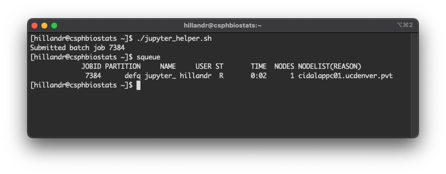

RStudio/JupyterLab on the CSPH Biostats Cluster
Research Tools Committee
Last Updated: 2025-06-03
CIDA_BIOS_Cluster_Interactive_IDEs.RmdA. Introduction
This document will guide you through running interactive RStudio (and/or JupyterLab) sessions on the Biostats cluster.
Once configured, you’ll be able to easily submit RStudio/JupyterLab SLURM jobs, and access them through your browser.
We’ll cover:
- First-time Setup - Some one-time, prerequisite configuration steps on your local computer to enable connections to RStudio and JupyterLab.
- Launching RStudio Sessions - How to launch an RStudio session on the cluster and connect from your browser.
- Launching JupyterLab Sessions - How to launch a JupyterLab session on the cluster and connect from your browser.
- Quitting RStudio/JupyterLab Sessions - How to quit an RStudio/JupterLab session.
- (Optional) Additional Options - Some additional options and information which may be useful.
If you’ve never used the csphbiostats cluster before,
you’ll need to request an account. Information on how to access the
cluster is available in the Accessing
the CSPH Biostats Cluster section of the main Biostats HPC
article.
If you previously followed this guide to set up RStudio/JupyterLab and just need a refresher on how to launch an RStudio/JupyterLab job, check out the Quickstart section.
A1. Motivation
Using RStudio/JupyterLab on the csphbiostats cluster
allows you to:
- Use the cluster’s significant computational resources to work with larger datasets than would be possible on a local machine, while coding interactively in a familiar environment.
- Offload time consuming analysis tasks from your local computer to the cluster (your RStudio/JupyterLab job will keep running on the cluster, even if you log out!)
- Running RMarkdown/Quarto/Jupyter Notebooks and generating reports directly from the cluster.
- Generate and view visualizations in real-time.
A2. Capabilities
The RStudio container runs R 4.5.0, and supports the usual RStudio
functions including RMarkdown/Quartio notebooks, interactive plotting,
etc. For convenience, the RStudio container has a variety of commonly
used packages pre-installed, including the tidyverse
family, and also packages many system libraries needed for compiling R
packages from source.
The JupyterLab container supports running Jupyter Notebooks
(.ipynb), and supports all JupyterLab functions. By
default, the JupyterLab container has the following kernels
installed:
- Python 3.13
- R 4.5.0
- Julia 1.11.5
B. Questions, Comments, Issues
This project is hosted on GitHub here.
If you have questions, encounter difficulties, or have suggestions for improvements, feel free to either open an issue on GitHub or email me directly.
1. First-time Setup
Although the RStudio/JupyterLab instance will run on an HPC compute node, you’ll log in to the cluster normally (via SSH), and access then RStudio/JupyterLab interface through your local browser.
In order for this to work correctly, we need to configure a few SSH options when logging in to the cluster. These SSH options should only need to be configured once.
1A. Locate SSH Config File
The simplest way to configure SSH connections is to use the SSH
config file, which allows us to define persistent options
that will be used each time we log in to the cluster (rather than having
to remember which parameters to pass on the command line each time).
On Mac/Unix-like systems, this file is located at
~/.ssh/config, and on Windows it is located at
C:/Users/<username>/.ssh/config.
If you don’t see a file named config in that location
that’s OK, just create it with your text editor of choice.
Note: Some GUI clients (like PuTTY on Windows) do not support port forwarding to Unix sockets (requried functionality to use RStudio/JupyterLab on the cluster). However, modern command-line versions of SSH on Mac and Windows do support this.
1B. Add SSH Configuration options
Open up the config file in your text editor of choice.
If you had a pre-existing config file, check if you have an
entry with Host csphbiostats.ucdenver.pvt or
HostName csphbiostats.ucdenver.pvt. If you already have an
entry you can modify it instead of creating a new entry.
IMPORTANT: If you have an existing
config, and there is an entry that begins with
Host *, you should add the new configuration we make
above the existing Host * section to
ensure that our new configuration will take precedence.
1B.1 SSH Config Template
Configure your entry to look something like the below entry template,
replacing the three highlighted your_username placeholders
with the username you use to log into the cluster with SSH:
Host biostats
HostName csphbiostats.ucdenver.pvt
User your_username
Port 22
LocalForward 8895 /tmp/jupyter-your_username.sock
LocalForward 8896 /tmp/rstudio-your-username.sock
1B.2 Fully-configured SSH Config Example
As an example, a fully-configured entry looks like this:
Host biostats
HostName csphbiostats.ucdenver.pvt
User coopdale
Port 22
LocalForward 8895 /tmp/jupyter-coopdale.sock
LocalForward 8896 /tmp/rstudio-coopdale.sockThe three your_username placeholders from the template
have been replaced with the user’s username coopdale.
1B.3 SSH Config Explanation
As a quick breakdown of the above configuration options:
The Host biostats line assigns this configuration the
alias/name ‘biostats’. We can use this name when running SSH to
automatically use all of the configuration options we specified,
like:
The User field should be your cluster username, and
Port can be set to 22 (the default port for
SSH).
The two key elements are the LocalForward fields:
LocalForward 8895 /tmp/jupyter-<your_username>.sock
LocalForward 8896 /tmp/rstudio-<your_username>.sockThese options tell the SSH client to forward local traffic on these ports to specific Unix socket paths on the cluster, allowing you to access the running RStudio/JupyterLab jobs.
In this case, port 8895 will be used for JupyterLab and
port 8896 will be used for RStudio, but feel free to
customize these to any non-reserved ports you like (most ports in the
8800-8999 range should be available).
Once configured, save and close the file.
1C. Test the SSH Connection
Now, we’ll run a quick check to verify that the SSH configuration is working as expected.
First, we need to open a terminal window, which varies slightly by platform:
| OS | Command |
|---|---|
| Windows | Search for ‘Powershell’ or ‘Command Prompt’ |
| Mac | Search for ‘Terminal’ |
Once the terminal window is open, type:

Once you’ve logged in via SSH, open a web browser on your local machine (but keep the SSH window open!) and enter:
in the address bar. If you assigned different ports in your config file, modify the address accordingly.
In the browser, you should see an error screen. This is expected.
Moving back to your SSH window, you should see some error messages populate the screen:

If you see these error messages in your SSH window, Congratulations!
This means you’ve configured SSH correctly! The error messages appear because the browser is attempting to connect, but there is nothing on the other end (yet) to accept the connection.
These error messages will continue to appear in your SSH window as
long as you keep the localhost:8895 browser tab open. Feel
free to close the browser tab now and type clear in your
SSH window to clear the messages from your terminal screen.
1C.1 Troubleshooting
If you don’t see the error messages in your SSH window:
- Make sure the
localhost:<port>you’re visiting in browser matches one of theLocalForward <port>lines in your SSH config file. - Check that you’re logging in with the
ssh biostatsalias from your SSH config file. - Verify that these ports aren’t being used by something else on your machine (i.e. a local Jupyter Notebook).
1D. Get Launch scripts
To launch an RStudio/JupyterLab session, you’ll need a copy of the
rstudio_helper.sh and jupyter_helper.sh
scripts. These scripts help automate some of the setup for
RStudio/JupyterLab sessions.
In your SSH window, navigate to your home directory
(cd ~) and run:
cp /biostats_share/hillandr/containers/scripts/rstudio_helper.sh .
cp /biostats_share/hillandr/containers/scripts/jupyter_helper.sh .To make copies of both scripts in your home directory
(~).
2. Launching an RStudio Session
Once you have copies of the launch scripts, in your SSH window try running:
You should see a message
Submitted batch job <job_id>. This is the Job ID for
your RStudio job, which you’ll need again when you want to shut down the
RStudio session. This ID will change each time you launch a new job.
Now, run squeue.
You should see an entry for your Job ID, similar to my example below.
This job will also produce two output files
rstudio_helper.out and rstudio_helper.err
which will log outputs or errors that the system encounters.
If you don’t see your Job ID in the squeue
list, try inspecting the two above files for any error messages.
2A. Connect to RStudio
If you can see your RStudio job running in squeue, go
back to your web browser and visit
in the address bar.
You should see a loading screen, and eventually the RStudio interface!

Congratulations! You can now use RStudio on the cluster!
Feel free to try out the interface and verify that everything works as expected.
When you’re finished, shut down the RStudio job by following the instructions in Quit the RStudio/JupyterLab Job
2A.1 Troubleshooting
If you don’t see the RStudio interface in your browser:
- Verify that you used the correct port in the browser. (If you used
the default config, RStudio is
8896). - Double check your SSH config file and make sure your
LocalForwarddirectives match the template from 1B.1 SSH Config Template - Run
squeueagain and verify that your job is still running. If the job is not running, checkrstudio_helper.errandrstudio_helper.outfor more information.
2B. Customizing the RStudio Job
The rstudio_helper.sh script essentially just automates
some cleanup tasks and submits a new sbatch batch script
which launches RStudio.
If you open rstudio_helper.sh and scroll down to the
sbatch <<==SBATCH=SCRIPT== section, you can customize
the parameters of the underlying SLURM job to suit your needs:
# This command redirects the rest of this script to a sbatch call.
sbatch <<==SBATCH=SCRIPT==
#!/bin/bash
#SBATCH --job-name=rstudio_helper
#SBATCH --output=rstudio_helper.out
#SBATCH --error=rstudio_helper.err
#SBATCH --exclude=csphbiostats.ucdenver.pvt
#SBATCH --mem=64G
#SBATCH --ntasks=1
#SBATCH --cpus-per-task=8
# Launch the container.
apptainer run \
--no-mount /etc/localtime \
--bind /biostats_share:/biostats_share \
/biostats_share/hillandr/containers/rstudio.sif
==SBATCH=SCRIPT==The default rstudio_helper.sh script submits a job
which:
- Runs on any node except the head node
--exclude=csphbiostats.ucdenver.pvt - Requests 8 CPU Cores
--cpus-per-task=8 - Requests 64GB of RAM
--mem=64G
You can change any of these values to meet your needs.
The available resources of each compute node are listed in the article Computing on the CSPH Biostats Cluster.
3. Launching a JupyterLab Session
Once you have copies of the launch scripts, try running:
You should see a message
Submitted batch job <job_id>. This is the Job ID for
your JupyterLab job, which you’ll need again when you want to shut down
the JupyterLab session. This ID will change each time you launch a new
job.
Now, run squeue.
You should see an entry for your Job ID, similar to my example below.

This job will also produce two output files
jupyter_helper.out and jupyter_helper.err
which will log outputs or errors that the system encounters.
If you don’t see your Job ID in the squeue
list, try inspecting the two above files for any error messages.
IMPORTANT: The first time you launch JupyterLab, it
will create a Python virtualenv under
~/jupyterlab_env. This process takes time (in my
experience, up to 10 minutes). If you are unable to connect to your
JupyterLab instance immediately after launching the job, don’t worry!
The setup process will log output to the output and error logs listed
above.
3A. Connect to JupyterLab
If you can see your JupyterLab job running in squeue, go
back to your web browser and visit
in the address bar.
You should see a loading screen, and eventually the JupyterLab interface!

Congratulations! You can now use JupyterLab on the cluster!
Feel free to try out the interface and verify that everything works as expected.
When you’re finished, shut down the JupyterLab job by following the instructions in Quit the RStudio/JupyterLab Job
3A.1 Troubleshooting
If you don’t see the JupyterLab interface in your browser:
- Verify that you used the correct port in the browser. (If you used
the default config, JupyterLab is
8895). - Double check your SSH config file and make sure your
LocalForwarddirectives match the template from 1B.1 SSH Config Template. - Run
squeueagain and verify that your job is still running. If the job is not running, check thejupyter_helper.errandjupyter_helper.outfiles for more information. - If you’re launching JupyterLab for the first time, it could take up
to 10 minutes for the script to initialize the
/jupyterlab_venvvirtual environment. If the job is running (viasqueue) but you can’t connect through your browser, try waiting ~10 minutes for environment to initialize.- After the venv setup is complete, future launches of JupyterLab
through
./jupyter_helper.shshould take only a few seconds.
- After the venv setup is complete, future launches of JupyterLab
through
3B. Customizing the JupyterLab Job
The jupyter_helper.sh script essentially just automates
some cleanup tasks and submits a new sbatch batch script
which launches JupyterLab.
If you open jupyter_helper.sh and scroll down to the
sbatch <<==SBATCH=SCRIPT== section, you can customize
the parameters of the underlying SLURM job to suit your needs:
sbatch <<==SBATCH=SCRIPT==
#!/bin/bash
#SBATCH --job-name=jupyter_helper
#SBATCH --output=jupyter_helper.out
#SBATCH --error=jupyter_helper.err
#SBATCH --exclude=csphbiostats.ucdenver.pvt
#SBATCH --mem=64G
#SBATCH --ntasks=1
#SBATCH --cpus-per-task=8
# Launch the container.
apptainer run \
--bind /biostats_share:/biostats_share \
/biostats_share/hillandr/containers/jupyterlab.sif \
--notebook-dir "$HOME"
==SBATCH=SCRIPT==The default jupyter_helper.sh script submits a job
which:
- Runs on any node except the head node
--exclude=csphbiostats.ucdenver.pvt - Requests 8 CPU Cores
--cpus-per-task=8 - Requests 64GB of RAM
--mem=64G
You can change any of these values to meet your needs.
The available resources of each compute node are listed in the article Computing on the CSPH Biostats Cluster.
4. Quit the RStudio/JupyterLab Session
When you’re finished using JupyterLab or RStudio, run:
scancel <job_id>from your SSH window to kill the job (make sure everything is saved!).
A few things to note:
- Like other
sbatchjobs, the RStudio/JupyterLab jobs will continue to run after you log out of your SSH connection (you can try this yourself!).- This means you can log out (via SSH), then log back in later and keep using the same session.
- Although you can leave RStudio/JupyterLab running, its best
to quit the session (using
scancel) when you’re finished to free up resources for other users.
-
IMPORTANT: Check for a running RStudio/JupyterLab jobs
(using
squeue) before submitting a new one with./rstudio_helper.shor./jupyter_helper.sh!!!- Submitting a second job will not work, and will likely break your original session as well.
- By running
squeueyou can quickly locate the Job ID of your runningrstudio_helperorjupyter_helperJob (if one is running). You can then either cancel this job withscancelor just connect through your browser and keep working.
5. Quickstart (for returning users)
The complete process for launching a RStudio/JupyterLab instance (once the first-time setup is complete) looks like:
- Open a command prompt and run
ssh biostats.-
biostatsis the alias forcsphbiostats.ucdenver.pvtthat we configured in the first-time setup section.
-
- Check for a currently running RStudio/JupyterLab session using
squeue.- To reconnect to a running session, skip to step 5.
- To cancel the existing session, use
scancel <job_id>.
- If no existing session is running, from your SSH terminal run either
./jupyterlab_helper.shor./rstudio_helper.sh.- The script should exit after printing a Job ID for your new session.
- Verify that your new session is running using
squeueand look for the Job ID. - Open your browser to
localhost:8895(JupyterLab) orlocalhost:8896(RStudio). - Done!
6. Conclusion
At this point, you should be able to launch, connect to, and cancel RStudio and JupyterLab jobs on the cluster!
The sections below provide some additional configuration options and information, but these sections are completely optional.
7. (Optional) Additional Options and Job Customization
This section provides some additional information and configuration options.
7A. Apptainer Containers
The JupyterLab and RStudio instances both run inside of Apptainer containers.
Apptainer (formerly Singularity) containers are stored as
self-contained files with the .sif extension.
The benefit of hosting JupyterLab and RStudio within containers is that they offer a consistent environment where all dependencies are installed by default.
The RStudio and JupyterLab containers are derived from a base container image which holds installation of R, Python, and Julia languages, along with packages/libraries to support installing most other common R/Python libraries.
7A.1 Bind Mounts
One important concept when working with containers is a ‘bind mount’. Containers are like small Linux installations which run in a separate, read-only filesystem. This means we cannot access any files outside of the container by default.
Bind mounts allow us to overlay specific parts of the host’s filesystem onto the container, so we can read from and write our own files (on the host system) from inside the container.
By default, Apptainer sets up bind mounts for a few directories
including your home directory (~), your working directory
(.) and /tmp.
The jupyter_helper.sh and rstudio_helper.sh
scripts also include an additional bind mount:
--bind /biostats_share:/biostats_share
which allows us to access the /biostats_share directory
from inside the container.
If you find yourself unable to access files from within the
container, you can add the specific directory as a bind mount by
modifying the *_helper.sh script to include additional bind
mounts:
# This command redirects the rest of this script to a sbatch call.
sbatch <<==SBATCH=SCRIPT==
#!/bin/bash
#SBATCH --job-name=jupyter_helper
#SBATCH --output=jupyter_helper.out
#SBATCH --error=jupyter_helper.err
#SBATCH --exclude=csphbiostats.ucdenver.pvt
#SBATCH --mem=64G
#SBATCH --ntasks=1
#SBATCH --cpus-per-task=8
# Launch the container.
apptainer run \
--bind /biostats_share:/biostats_share \
--bind /another_special_directory:/another_special_directory \
/biostats_share/hillandr/containers/jupyterlab.sif \
--notebook-dir "$HOME" \
--venv "$HOME/my_custom_venv"
==SBATCH=SCRIPT==The line
--bind /another_special_directory:/another_special_directory
make the /another_special_directory path available in the
container (make sure to use an absolute path).
In general, bind mount arguments look like:
--bind <local_directory>:<container_path>
To mount <local_directory> path on the cluster to
<container_path inside the container.
To reduce confusion, I usually mount each local path to the same path
within the container (as I did with /biostats_share).
7B. JupyterLab Options
The JupyterLab container holds an installation of Python 3.13.
When launched for the first time, the container will create a new
virtualenv environment in your home directory at
~/jupyterlab_venv, which will hold all Python dependencies
(including JupyterLab itself).
7B.1 Using an alternative venv for JupyterLab
Although the ~/jupyterlab_venv is used by default, you
can specify a different virtualenv if you wish.
You can do this by modifying the jupyter_helper.sh
script and passing a value for the --venv parameter to the
jupyter.sif container.
The would look like:
# This command redirects the rest of this script to a sbatch call.
sbatch <<==SBATCH=SCRIPT==
#!/bin/bash
#SBATCH --job-name=jupyter_helper
#SBATCH --output=jupyter_helper.out
#SBATCH --error=jupyter_helper.err
#SBATCH --exclude=csphbiostats.ucdenver.pvt
#SBATCH --mem=64G
#SBATCH --ntasks=1
#SBATCH --cpus-per-task=8
# Launch the container.
apptainer run \
--bind /biostats_share:/biostats_share \
/biostats_share/hillandr/containers/jupyterlab.sif \
--notebook-dir "$HOME" \
--venv "$HOME/my_custom_venv"
==SBATCH=SCRIPT==The second-to-last line --venv "$HOME/my_custom_venv"
sets the path to the alternative venv.
If this path exists already, the launch script will attempt to activate and use this virtual environment.
If the path does not exist, it will be created and initialized with a default set of packages, which includes JupyterLab.
NOTE: If you do attempt to use an pre-existing
virtual environment, ensure that JupyterLab is installed before
running jupyter_helper.sh, as this script will fail if no
JupyterLab installation is found.
7C. RStudio Options
The RStudio container uses an installation of R 4.5.0, which is the latest version at the time of writing.
By default, the container comes with many libraries pre-installed,
including the tidyverse family of packages.
Additionally, the container has many development libraries installed, which should allow you to compile most R packages from source if required.
7C.1 Renv Usage
Although the container has many libraries pre-installed, I highly
recommend using renv in each of your RStudio projects.
You can run renv::init() from an RStudio project to
initialize renv.
7C.2 Changing the R Version
By default, the container uses R-4.5.0, but R-4.4.3 is also installed for compatibility.
To change the version of R used when launching RStudio, you can
change the R_PATH variable defined in the
rstudio_helper.sh script:
Changing this variable changes the path passed to the
--r-path argument later in the script.
Note that these paths are relative to the container, not to the cluster’s filesystem.
Currently the only two supported paths (and versions of R) are:
| Version | Path |
|---|---|
| R-4.5.0 (default) | /opt/R/4.5.0/bin/R |
| R-4.4.3 | /opt/R/4.4.3/bin/R |
If you need an alternative version of R installed, open an issue in the GitHub repository for this project and I can add it to the container.
7D. Implementation Details
If you are curious as to how the RStudio/JupyterLab interfaces are configured, this section provides a brief explanation.
The challenge with running RStudio/JupyterLab on the cluster is that the RStudio/JupyterLab server needs to run on a compute node, which is not directly acessible (via the network) to your local machine. Additionally, hosting a public web server on these nodes could present a security risk.

To facilitate a secure connection, each RStudio/JupyterLab job creates a link between your (local) computer and the compute node running the job via a pair of SSH tunnels.
The first SSH tunnel is configured locally on your machine (see the First-time Setup section above):
This SSH tunnel forwards any local traffic on
localhost:8895 or localhost:8896 to specific
Unix sockets (not ports) on the csphbiostats head node. We
use Unix sockets for this since they:
- Allow for file-like permissions (i.e. the socket is created and owned by your user, and cannot be accessed by others).
- Since Unix sockets are exposed as file-like objects, we can enforce unique naming (each Unix socket uses the user’s name as part of the socket path) to prevent port conflicts.
The second SSH tunnel is opened by the RStudio/JupyterLab job on the compute node. Once the job begins executing on the compute node, the RStudio/JupyterLab launch script will:
- Launch an RStudio/JupyterLab instance advertised on a Unix socket (again, we use Unix sockets instead of ports for the reasons listed above).
- Open a background SSH tunnel to the
csphbiostatsnode, which forwards all traffic on thecsphbiostats’s Unix socket to the compute node’s Unix socket (which is hosting the JupyterLab/RStudio instance).
In order for this to work seamlessly, the compute node needs to be
able to SSH into the head node without prompting for a password. The
launch script takes care of this by generating a SSH keypair (located at
~/.ssh/cluster_rsa) which the compute node may use to log
in to the head node.
Together, these two SSH tunnels form a connection between your
browser visiting localhost:8895 or
localhost:8896 and the RStudio/JupyterLab instance running
on the compute node.
In summary, the container’s launch script will:
- Check if the SSH keypair
~/.ssh/cluster_rsaexists.- If not, the launch script will automatically create this keypair and use it for future job launches.
- Check if your job is running on the head node
csphbiostatsor a compute node (any node which is notcsphbiostats)- In the event that the job is running on
csphbiostats, we don’t need the second SSH tunnel, as your local machine will already forward traffic directly to the configured Unix socket.
- In the event that the job is running on
- Launch the RStudio/JupyterLab instance.